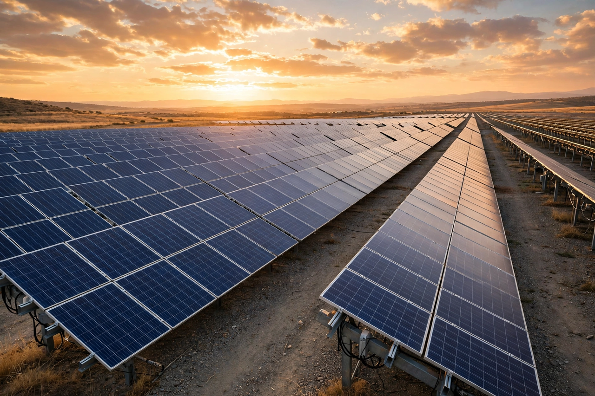

Solar cell

[Image: Photograph of a solar farm: rows of dark blue photovoltaic panels]A solar cell (or photovoltaic cell) is an electronic device that converts the energy of light directly into electricity by the photovoltaic effect. Solar cells are made from semiconducting materials, typically silicon, in which absorbed photons excite electrons across the band gap; the built-in electric field of a p–n junction separates the charges, producing current at useful voltage.
The photovoltaic effect was first demonstrated by Edmond Becquerel in 1839; Albert Einstein's 1905 explanation of the related Photoelectric effect supplied the theory, and the first practical silicon cell (Bell Labs, 1954, ~6% efficient) opened the technology. Efficiencies of commercial modules now exceed 20% (laboratory multi-junction cells approach 47%), costs have fallen by orders of magnitude since the 1970s (Swanson's law), and photovoltaic generation became, in the 2020s, the cheapest source of new electricity in most of the world and a central pillar of energy-transition planning. Perovskite and tandem cells are the leading candidates for the next efficiency jump.
How it works in brief
Each absorbed photon with energy above silicon's 1.1 eV band gap creates one electron–hole pair; photons below the gap pass unused, and excess energy above it is wasted as heat — the trade-off behind the Shockley–Queisser efficiency limit (~33% for a single junction under sunlight). Engineering around it (multiple junctions tuned to different colours, concentration, hot-carrier concepts) is a major industry of modern physics.